数据初始化
企业参数配置
-
【后台】选择左侧【设置-参数配置】菜单，【公司设置】设置公司的名称及默认审批人。
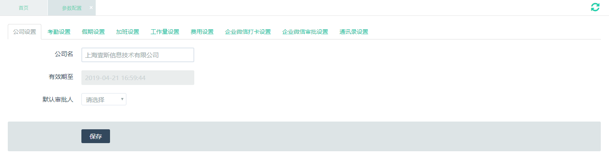
-
【后台】选择左侧【设置-参数配置】菜单，【考勤设置】设置企业考勤时间、考勤规则。
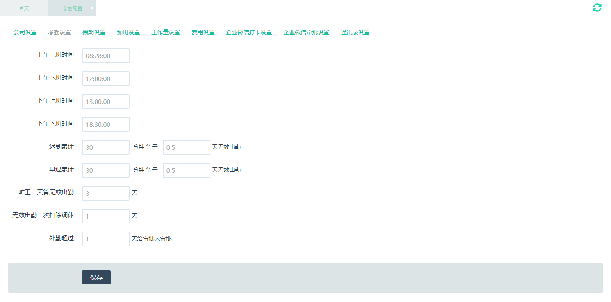
-
【后台】选择左侧【设置-参数配置】菜单，【假期设置】设置企业假期规则。
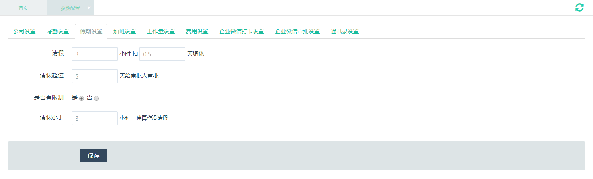
-
【后台】选择左侧【设置-参数配置】菜单，【加班设置】设置企业加班规则。
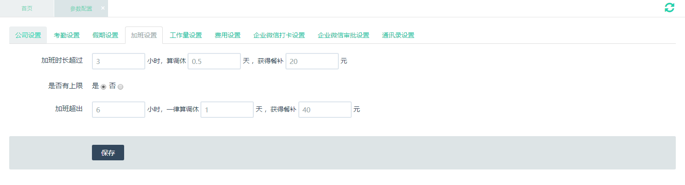
-
【后台】选择左侧【设置-参数配置】菜单，【工作量设置】设置企业工作量规则。
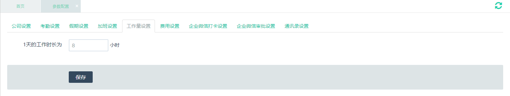
-
【后台】选择左侧【设置-参数配置】菜单，【费用设置】设置企业费用规则。
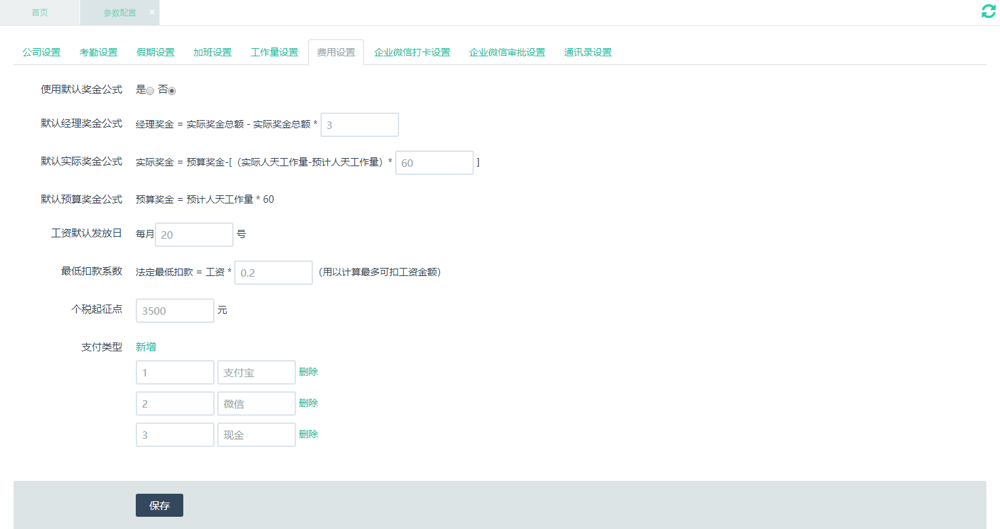
-
【后台】选择左侧【设置-参数配置】菜单，【企业微信打卡设置】设置企业微信打卡参数。
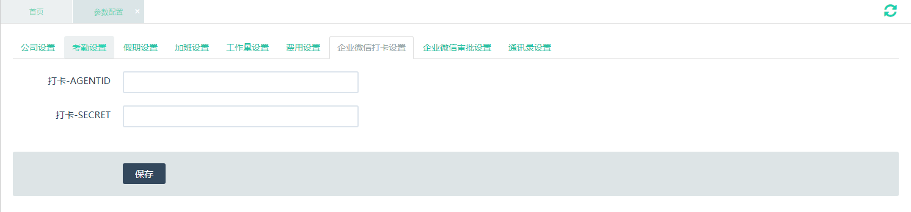
-
【后台】点击【应用与小程序】，点击“基础”中的【打卡】。
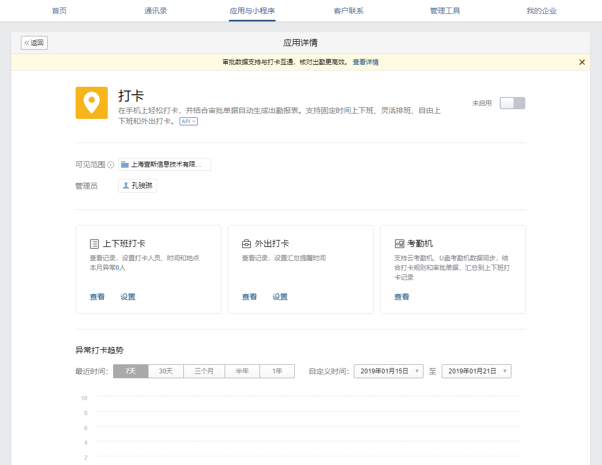
-
【后台】打开【已启用】按钮，点击【API】得到DK_AGENTID和DK_SECRET数据。并填写到【企业微信打卡设置】中。
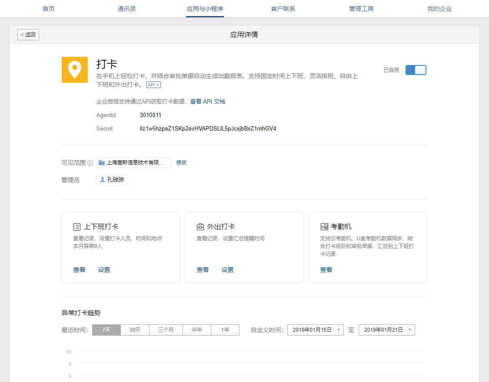
-
【后台】选择左侧【设置-参数配置】菜单，【企业微信审批设置】设置企业微信审批参数。
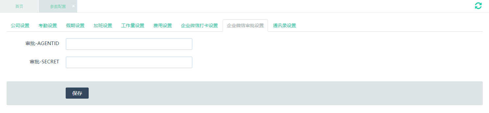
-
【后台】点击【应用与小程序】，点击“基础”中的【审批】。
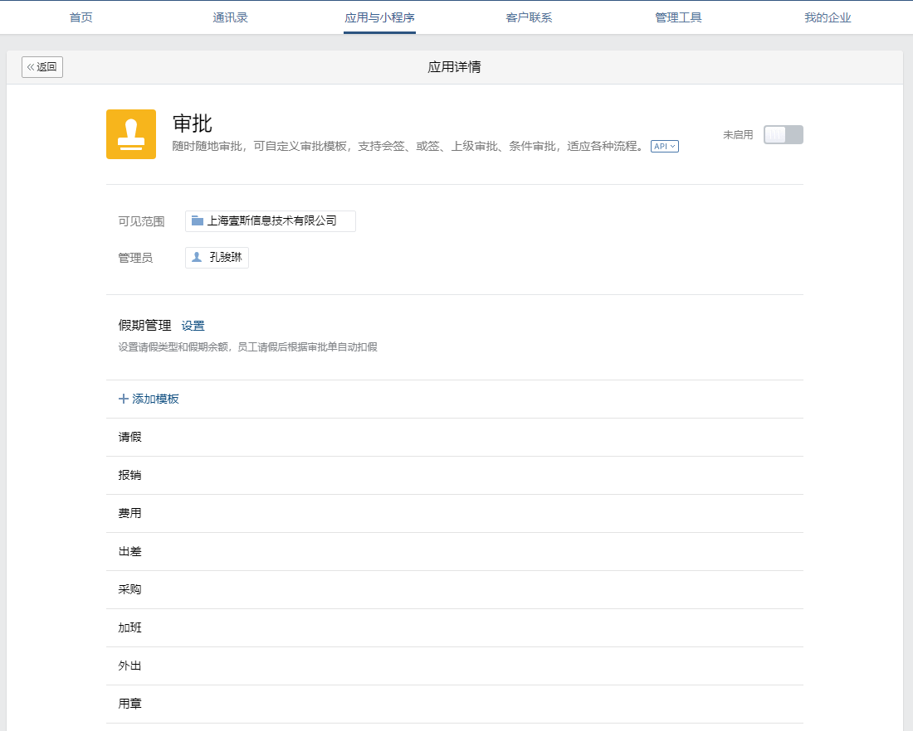
-
【后台】打开【已启用】按钮，点击【API】得到DK_AGENTID和DK_SECRET数据，并填写到【企业微信审批设置】中。
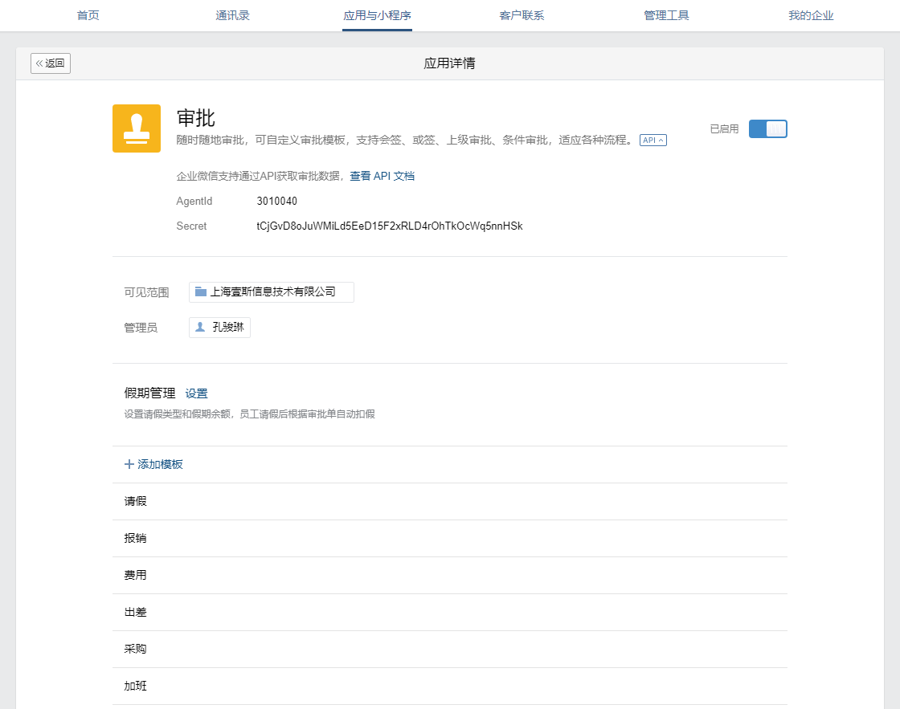
-
【后台】选择左侧【设置-参数配置】菜单，【通讯录设置】设置通讯录参数
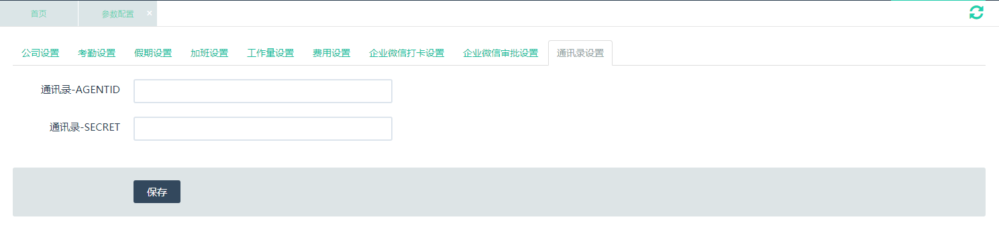
-
【后台】选择左侧设置-参数配置菜单，在交通补贴配置中设置补贴参数。
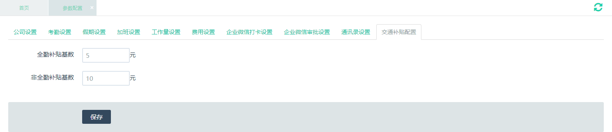
添加员工
添加部门
-
【后台】选择左侧用户管理-用户组-企业部门菜单，在企业部门列表中已有常用部门，如需要添加则在添加部门中添加企业部门信息，填写完成点击添加。
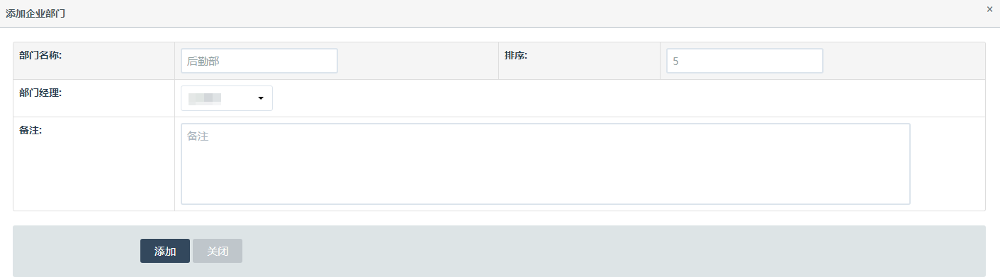
添加职位
-
【后台】选择左侧用户管理-用户组-企业职位菜单，企业职位列表中已有常用职位，如需要添加则在添加职位中添加企业职位信息，填写完成点击添加。
添加项目类型
-
【后台】选择左侧项目管理-项目类型管理菜单，项目类型列表中已有常用类型，如需要添加则在添加项目类型中添加类型，填写完成点击添加。
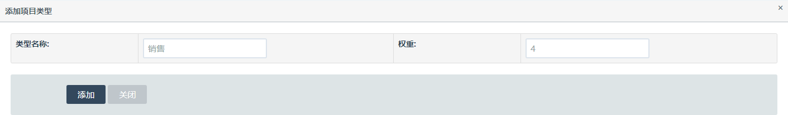
添加项目
-
【后台】选择左侧项目管理-项目列表菜单，在添加项目中添加项目信息，填写完成点击添加。
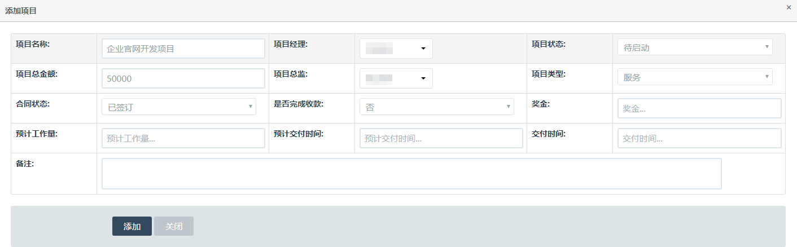
微信权限管理
-
【后台】选择左侧用户管理-用户组-微信权限管理菜单，角色管理中已有常用角色，如需要添加则在添加角色中添加角色信息，填写完成点击提交。默认是否启用为开启。
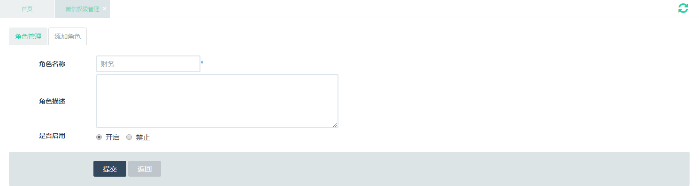
-
【后台】选择左侧用户管理-用户组-微信权限管理菜单，打开管理权限中的权限设置，勾选和角色相关的权限，勾选完成点击保存。
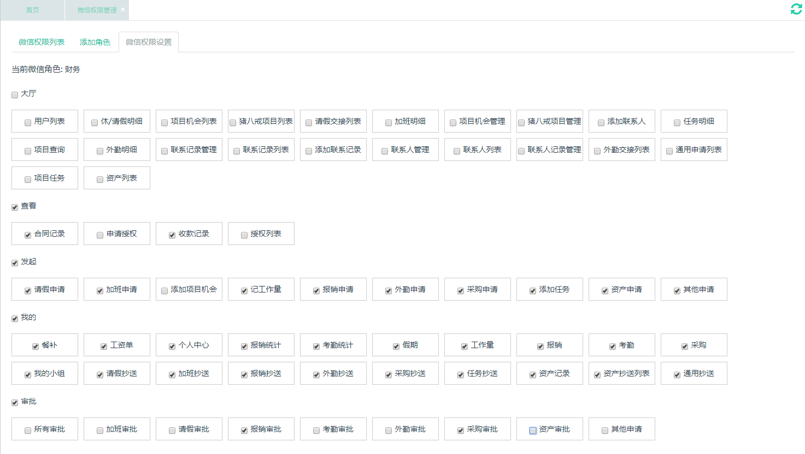
管理员添加
-
【后台】选择左侧用户管理-管理组-管理员菜单，在管理员添加中添加企业管理员信息，填写完成点击添加。
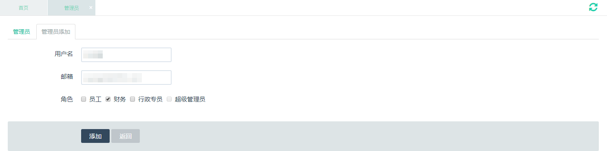
访问权限
-
【后台】选择左侧用户管理-管理组-访问权限菜单，角色管理中已有常用角色，如需要添加则在添加角色中添加角色信息，填写完成点击提交。默认是否启用为开启。
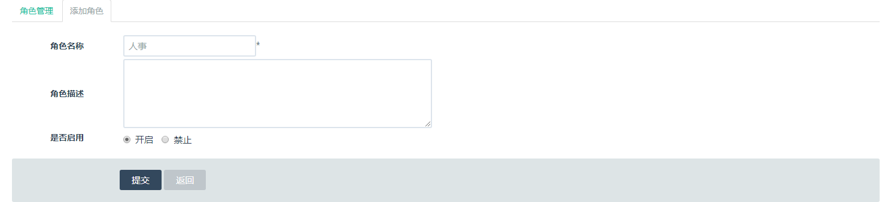
-
【后台】选择左侧用户管理-管理组-访问权限菜单，打开管理权限中的权限设置，勾选权限，勾选完成点击保存。
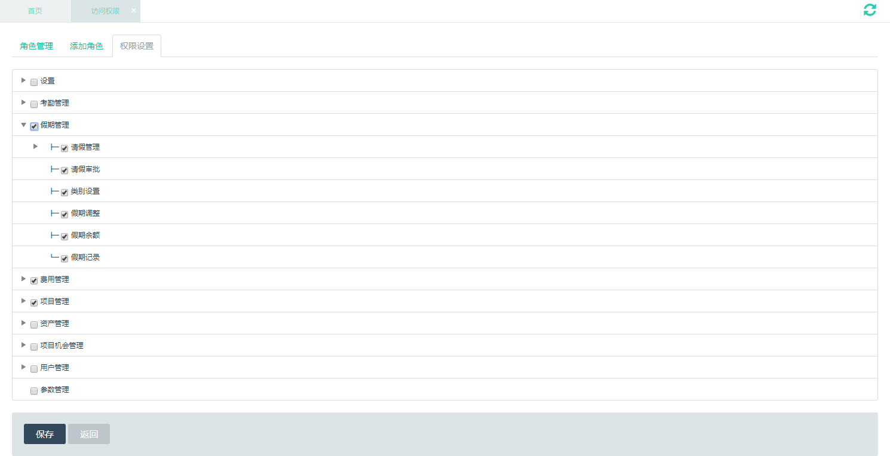
审批和推送
-
【后台】选择左侧用户管理-管理组-审批和推送菜单，在添加设置中勾选类型、操作及推送接收人，勾选完成点击添加。
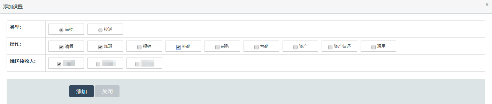